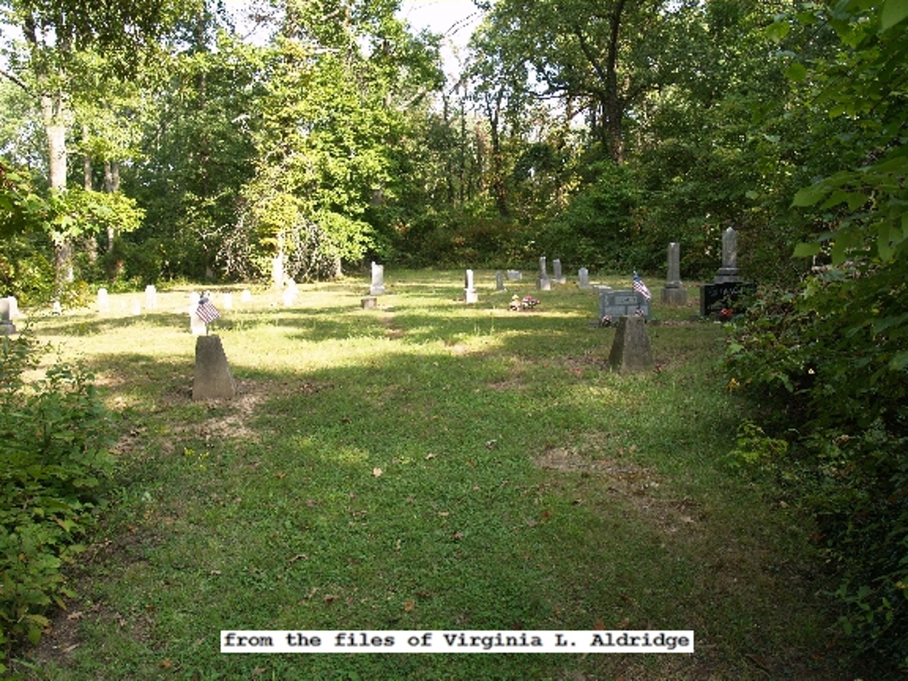
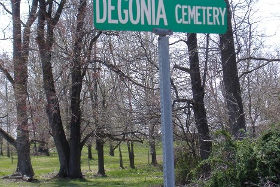
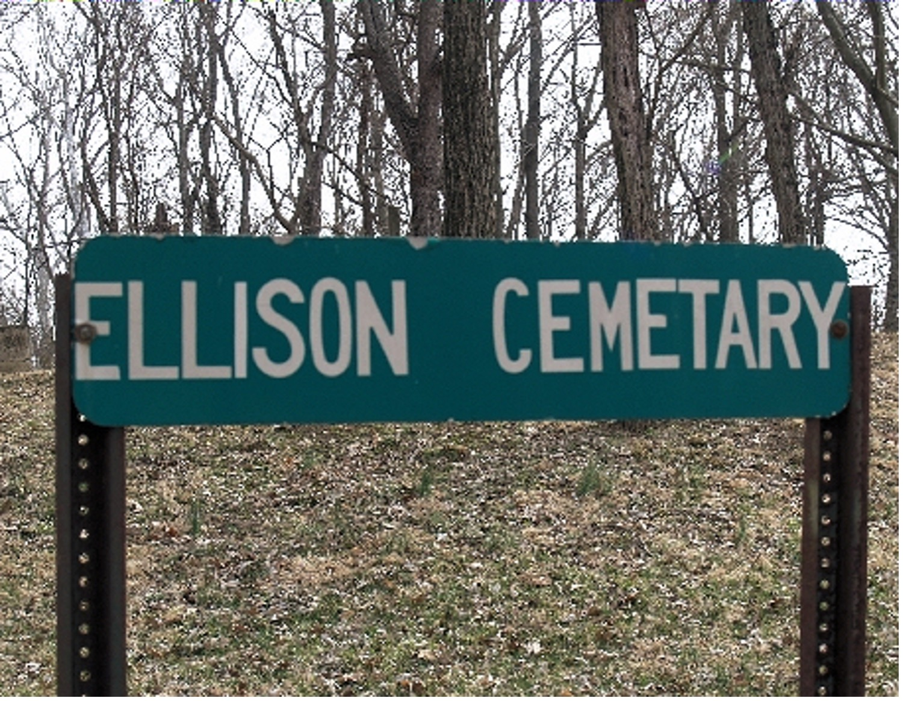
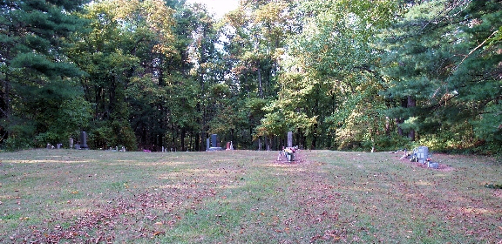
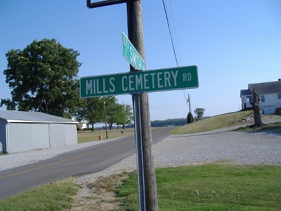
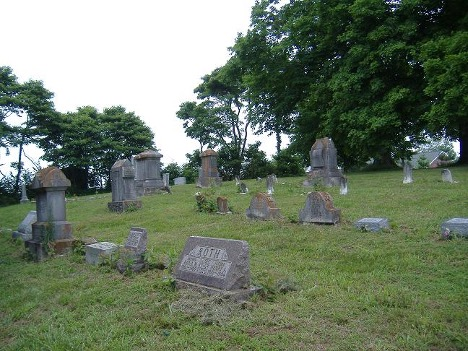

Cemeteries
Cemeteries under the care of Skelton Township
View cemetery locations, directions, photos, and available burial information.






Cemeteries
View cemetery locations, directions, photos, and available burial information.





